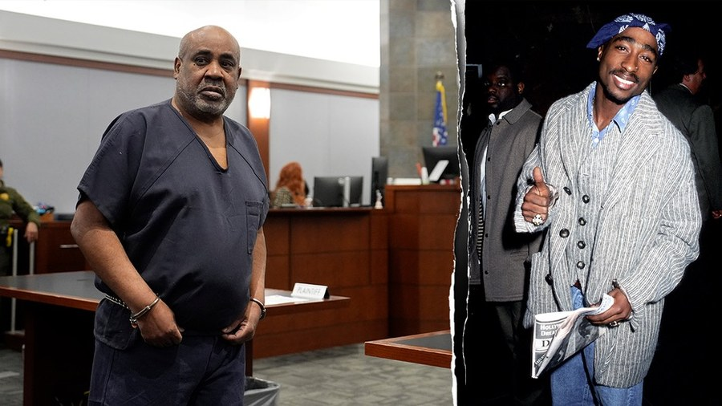

Tupac Shakur Murder Verdict: Duane "Keffe D" Davis Found Guilty, Explained
Duane "Keffe D" Davis never fired a shot. Nevada law didn't require that he had, and a Las Vegas jury needed less than three hours to agree.

A Las Vegas jury needed less than three hours to convict Duane "Keffe D" Davis of first-degree murder in the 1996 killing of Tupac Shakur. It is the first conviction of any kind in a case that had gone unresolved for nearly thirty years — and prosecutors never once claimed Davis pulled the trigger.
That distinction is the legal foundation the entire case was built on. Under Nevada law, a person who helps direct or carry out a murder can be held as criminally responsible as the person who fires the shot. Prosecutors used that principle to present Davis, a 63-year-old former Compton gang figure, as the "shot caller" who supplied the weapon and set the retaliation in motion, rather than the man in the back seat who fired it. He is the only person ever charged in Shakur's death.
The outline of that night is well established. Shakur, 25, was shot in a drive-by attack near the Las Vegas Strip on September 7, 1996, while riding in a car driven by Death Row Records co-founder Marion "Suge" Knight; he died of his injuries days later. Prosecutors argued the shooting followed an earlier fight at the MGM Grand, where Shakur and members of his group assaulted Davis's nephew, Orlando Anderson — and that Davis, in response, obtained a gun and helped lead the search for Shakur that night.
What made the case unusual was what prosecutors didn't have. There was no recovered murder weapon, no recovered vehicle, no surveillance footage of the shooting, and no DNA or forensic evidence tying Davis directly to the scene. Chief Deputy District Attorney Binu Palal built the case almost entirely on Davis's own words — 2008 and 2009 police interviews in which he described being in the car and passing a gun toward the back seat, his 2019 memoir Compton Street Legend, years of podcast and documentary appearances, and jail calls recorded after his 2023 arrest. In those accounts, spread across more than a decade, Davis had described his own role in the killing repeatedly and in detail.
The defense's response was that none of it should count as proof. Attorney Michael Sanft argued Davis had spent years exaggerating or fabricating his account to sell books and draw media attention, and called acquittal "the only verdict that makes sense in this case." A retired Las Vegas detective testified he couldn't independently verify parts of Davis's story, including hospital records for Anderson and rental records for the Cadillac Davis described. The jury heard roughly two dozen prosecution witnesses against three for the defense, and was not persuaded — returning a unanimous guilty verdict on a single count of first-degree murder with a deadly weapon.
Prosecutors never claimed Davis fired the shots. Nevada law didn't require that he had.
The courtroom carried the weight of what the verdict actually closed. Shakur's sister, Sekyiwa "Set" Shakur, wept as it was read. Davis's son covered his face. Davis himself stood silently through the decision, then raised a fist toward the gallery on his way out. District Judge Carli Kierny ordered him held without bail ahead of an October 13 sentencing, where he faces a maximum of life in prison; his attorneys have said they plan to appeal.
The case sat, from opening statements to verdict, inside the same East Coast–West Coast mythology that has shaped hip-hop's memory of the mid-1990s for a generation — The Notorious B.I.G.'s name surfaced repeatedly during the trial, a reminder of how inseparable the two deaths remain in the culture's telling of that era. Shakur's killing has been picked over by fans, journalists, and investigators for almost thirty years without a single conviction to show for it. As of Monday, for the first time, there is one.